大扭矩转向
转向电机通过同步带减速组带动轮组改变朝向，支持 360° 轮向控制。
SWERVE DRIVE MODULE
SW69-TTL 将行走、转向、轮向反馈和总线驱动集成在一个舵轮模组中，适用于需要横移、斜向移动和原地旋转的机器人底盘。
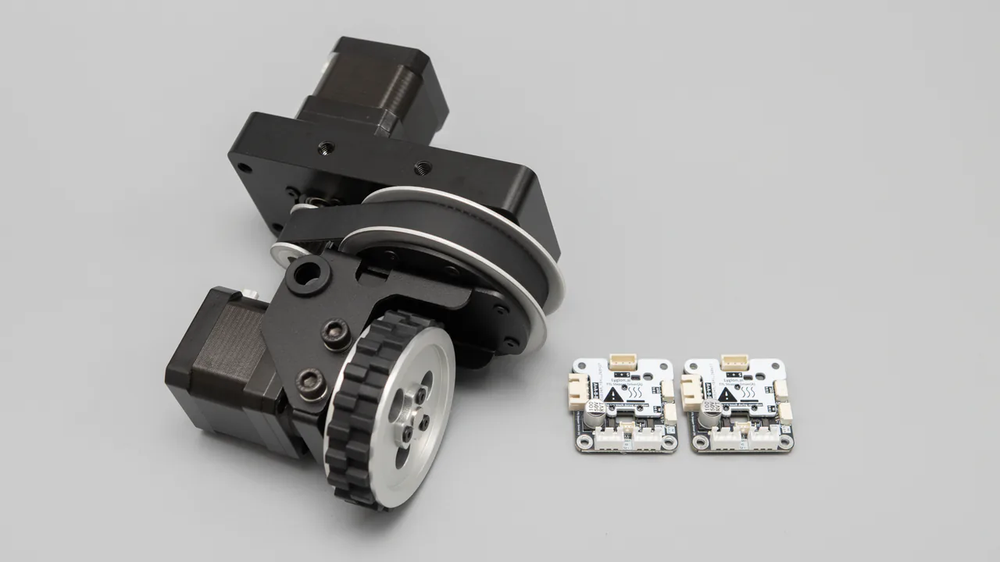
PRODUCT POSITIONING
SW69-TTL 适用于全向移动机器人移动平台。每个模组独立完成轮组行走、转向与绝对角度反馈。
机械结构、电机、驱动与角度反馈集中在一个模组内，易于集成和使用。
转向电机通过同步带减速组带动轮组改变朝向，支持 360° 轮向控制。
行走电机驱动 69 mm 轮组，可设置方向、速度和运动目标，并支持平滑启停与心跳保护。
编码器读取当前轮向；校准参数掉电保存，上电后无需执行机械回零。
两块驱动板与编码器共用一条通信链路，设置独立 ID 后可由主控统一寻址。
PRODUCT STRUCTURE
6061 高强度 CNC 机架，配合转向电机、行走电机和同步带轮减速组，结构简单易安装。
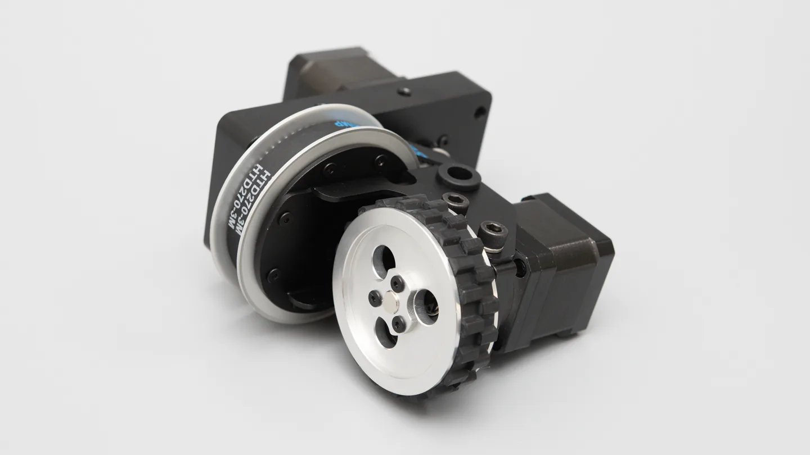
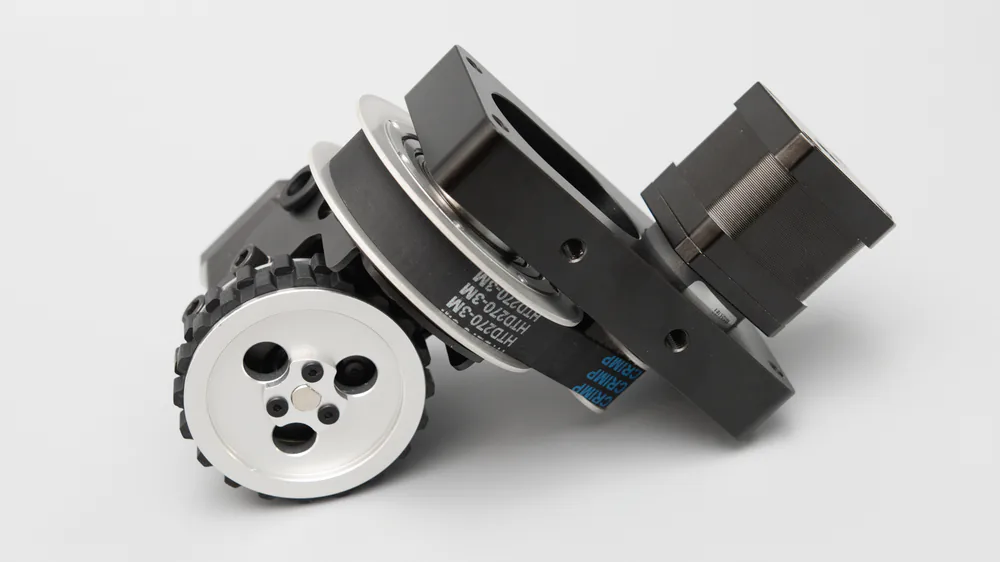
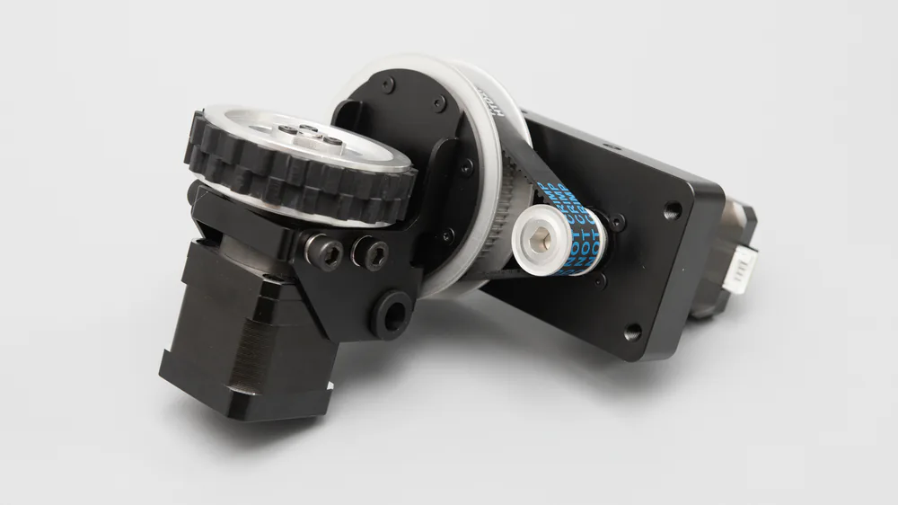
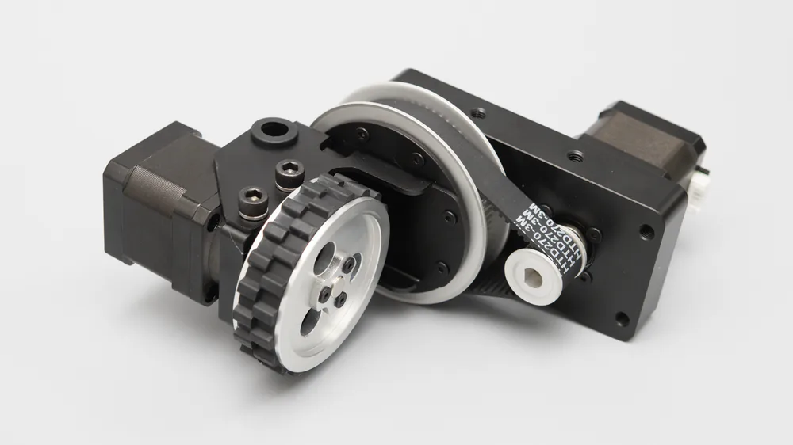
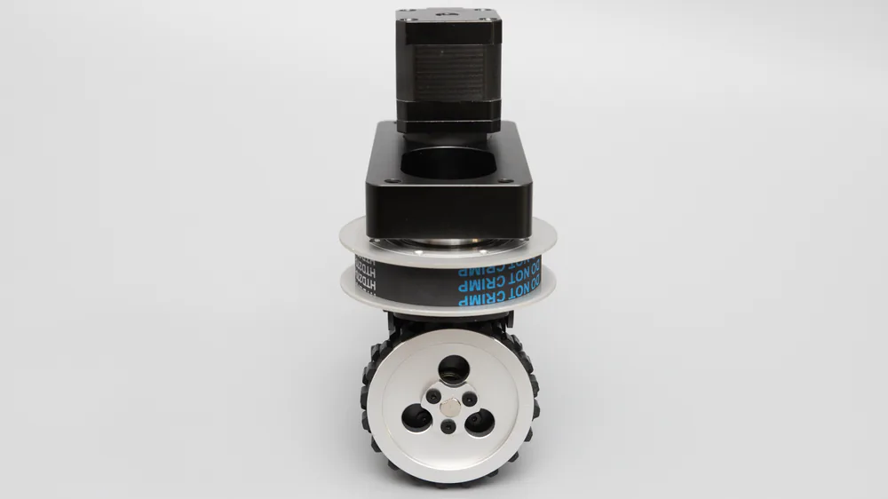
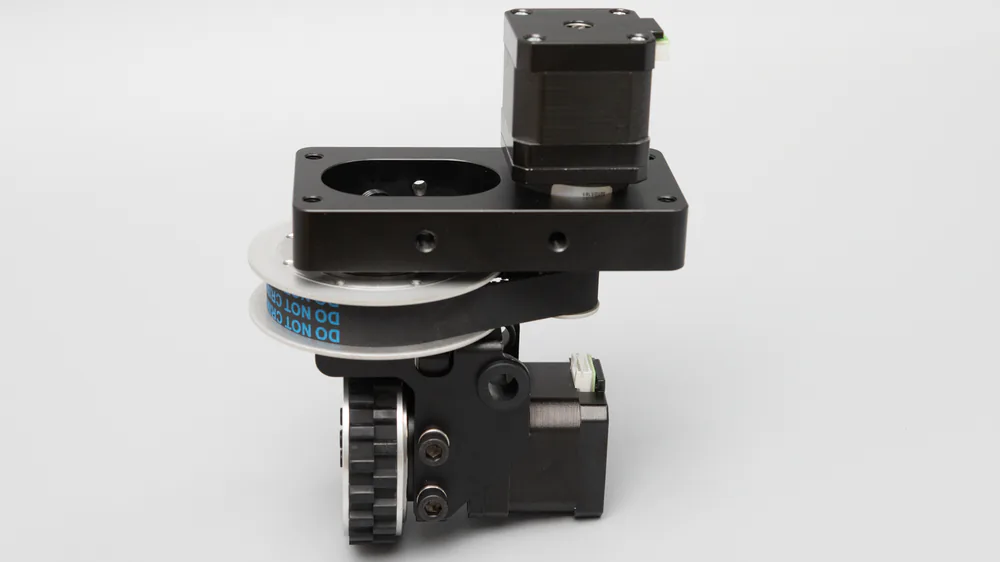
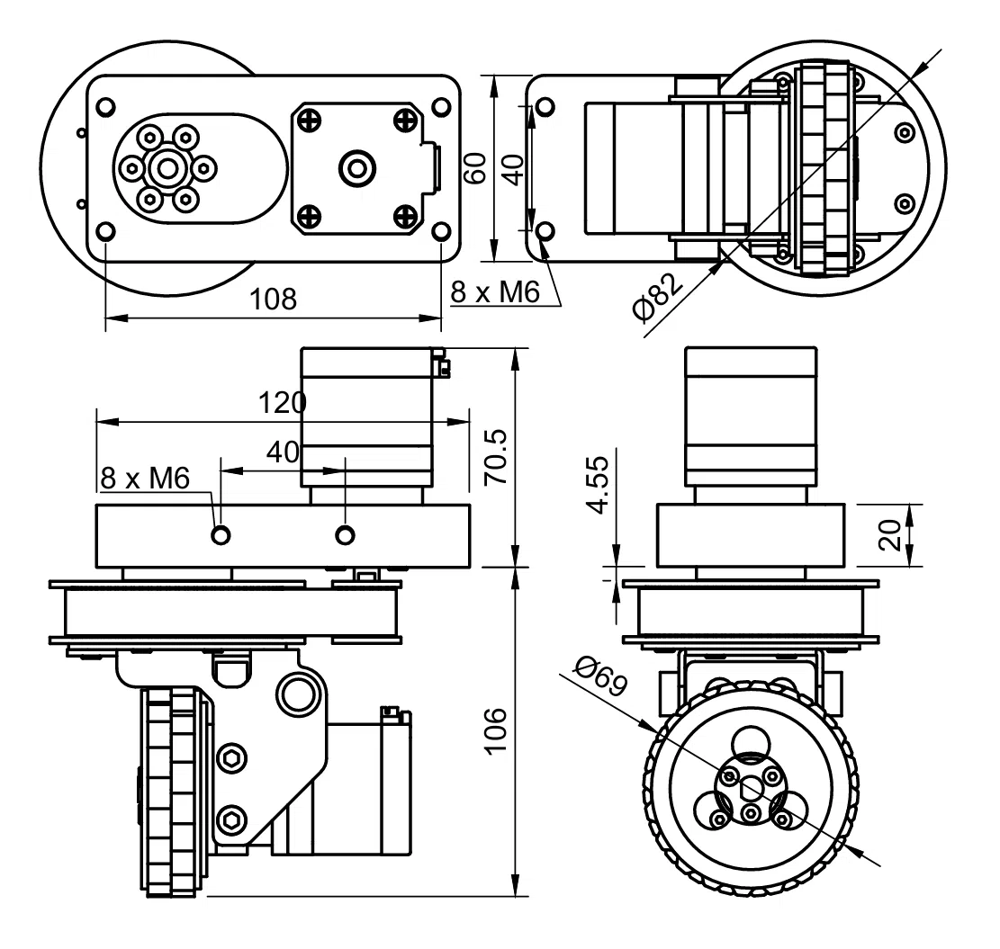
TTL BUS INTEGRATION
每只 SW69-TTL 使用两块 TTL Stepper Driver (A) 分别控制转向与行走电机。驱动板、绝对角度编码器和其它总线设备设置独立 ID 后，可由主控统一控制。
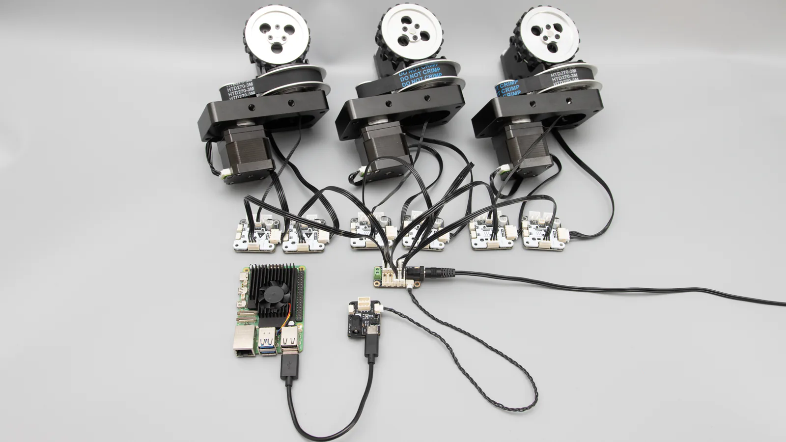
为总线上的驱动板和编码器分配不重复的 ID，并逐一确认通信。
将步进电机、驱动板和绝对角度编码器接入总线。
基于我们开源的例程，开发全向移动底盘应用。
CONFIGURATION & DEVELOPMENT
FD 调试软件用于搜索总线设备、修改 ID、查看反馈曲线和配置驱动参数。单模组通信、转向与行走验证通过后，再接入 PC、SBC 或 MCU 的控制程序。

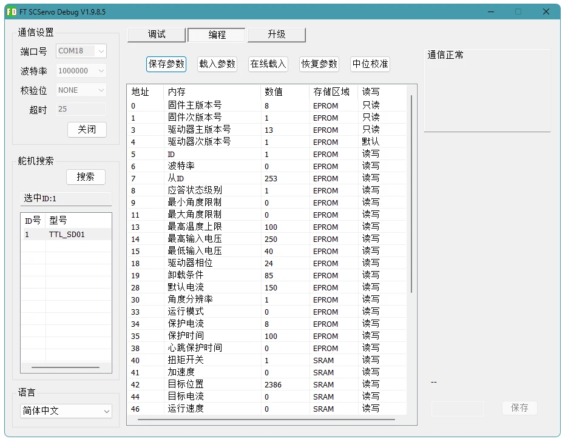
可通过 TTL Adapter 接入总线，使用 Python 示例进行设备搜索、配置和运动控制。
通过单线 TTL 接口接入，并使用 C++ / Arduino 示例完成嵌入式控制。
在单轮方向和零位确认后，根据底盘轮距、轴距与安装方向实现运动学控制。
REFERENCE DESIGN
以下模型用于展示 SW69-TTL 的典型安装方式。用户可在“灵影开源”中下载 STEP 模型，根据电池、主控、传感器和外壳尺寸继续修改。
查看灵影开源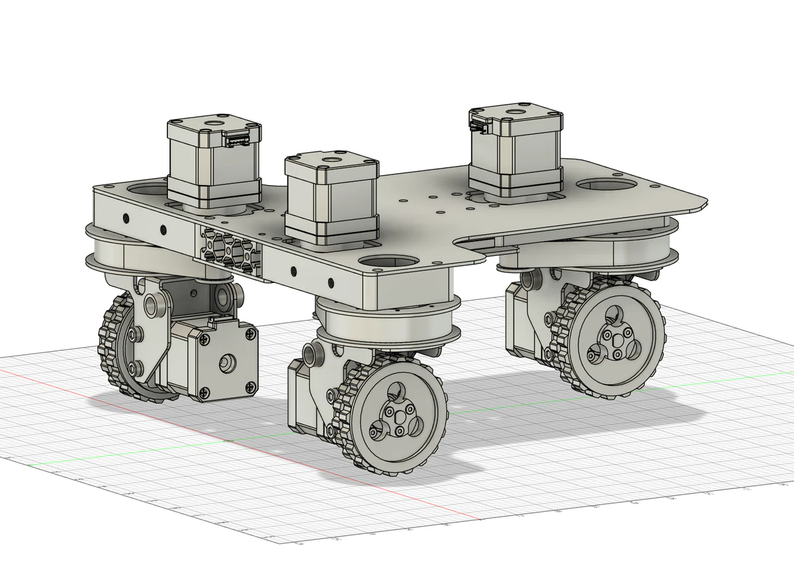
SPECIFICATIONS
PACKAGE CONTENTS
一只舵轮模组、两块 TTL Stepper Driver (A) 与配套连接线。
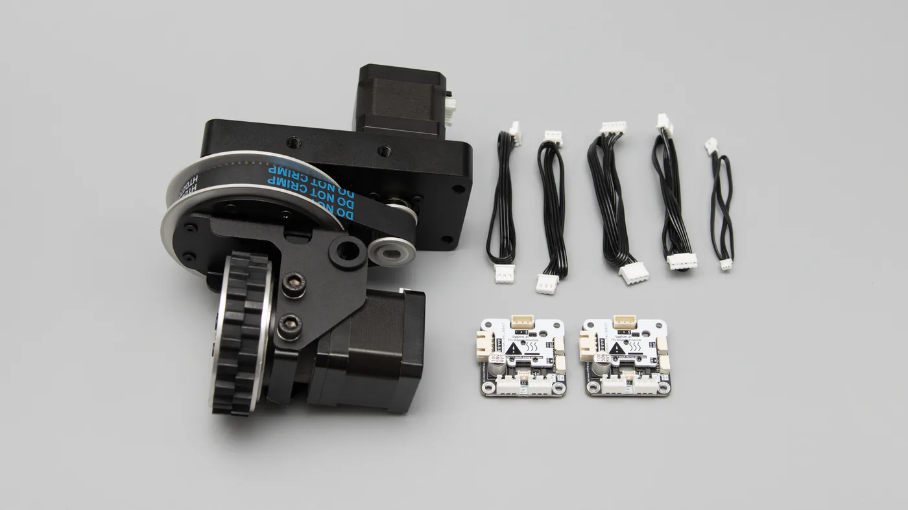
DOCUMENTATION
SW69-TTL 由总线驱动板、绝对角度编码器和机械模组组成。可从对应设备 Wiki 开始确认接口、参数与示例程序。